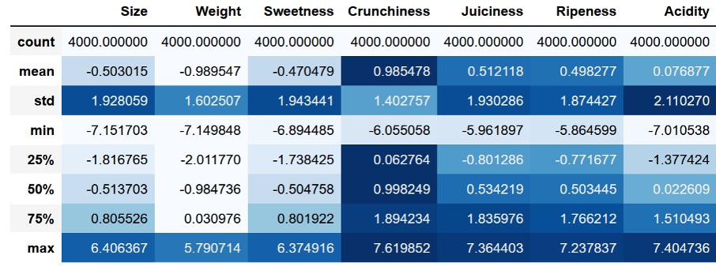
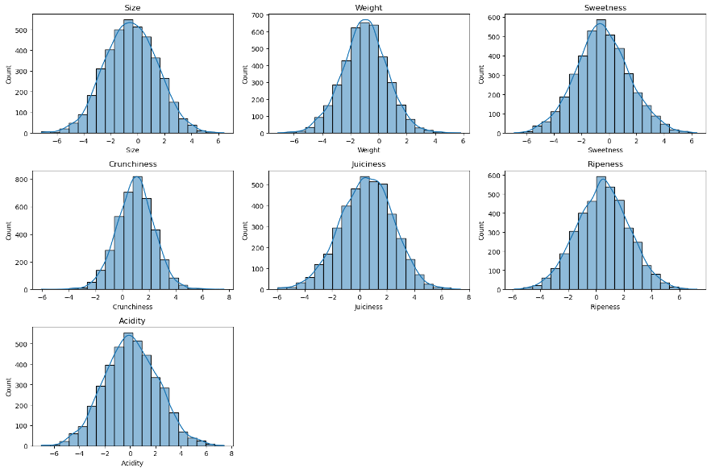
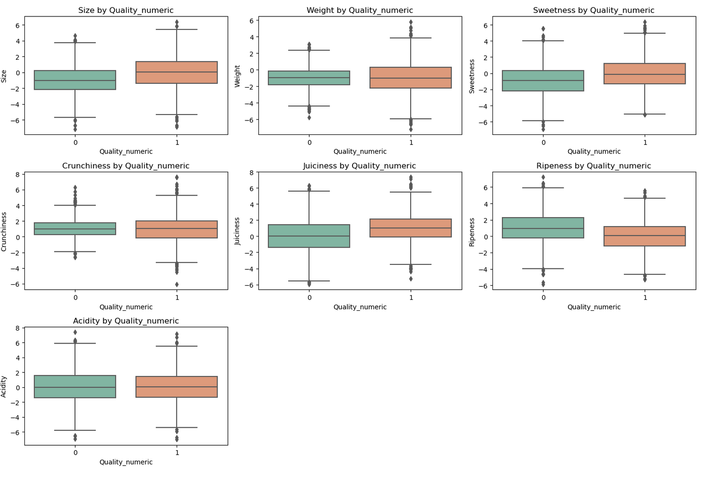
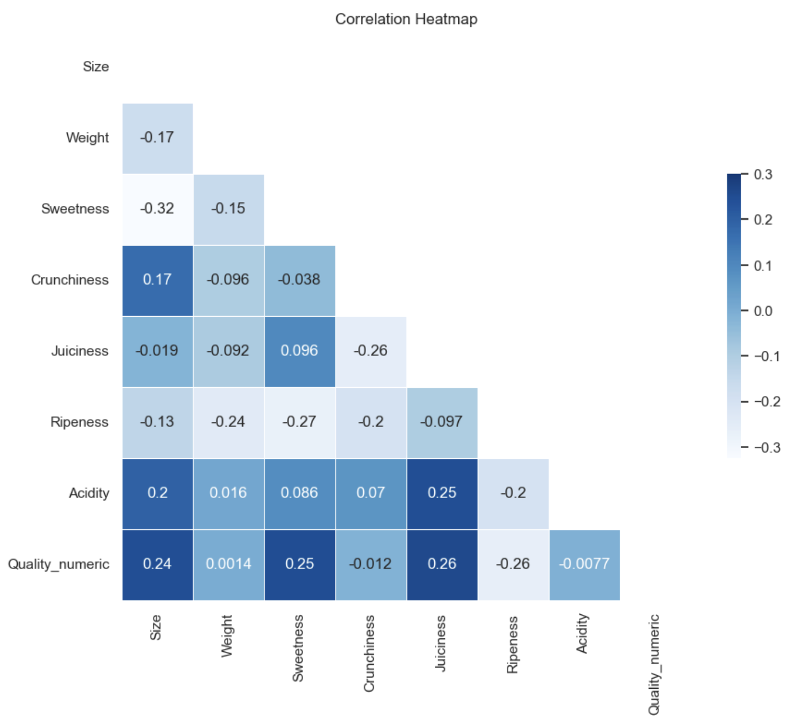
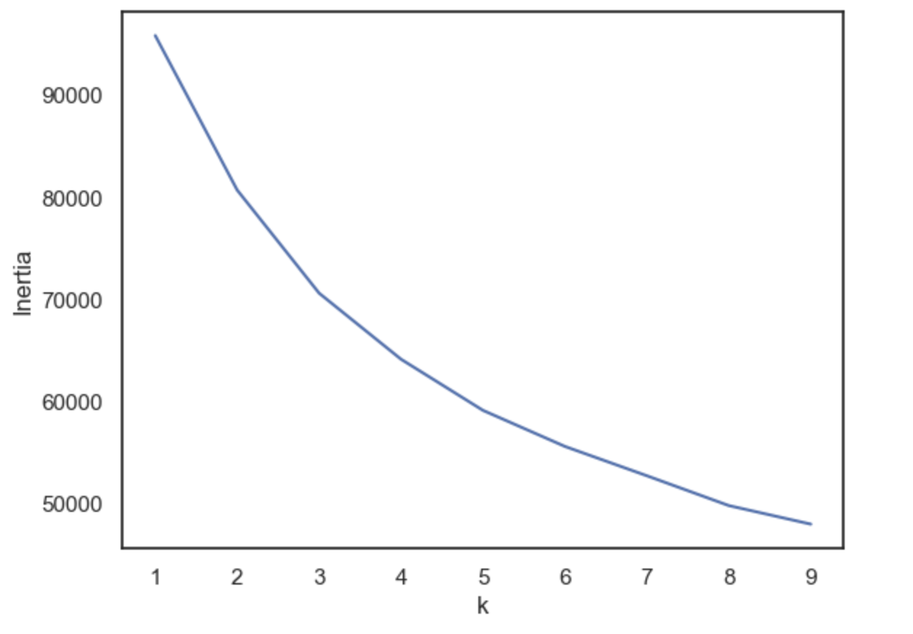
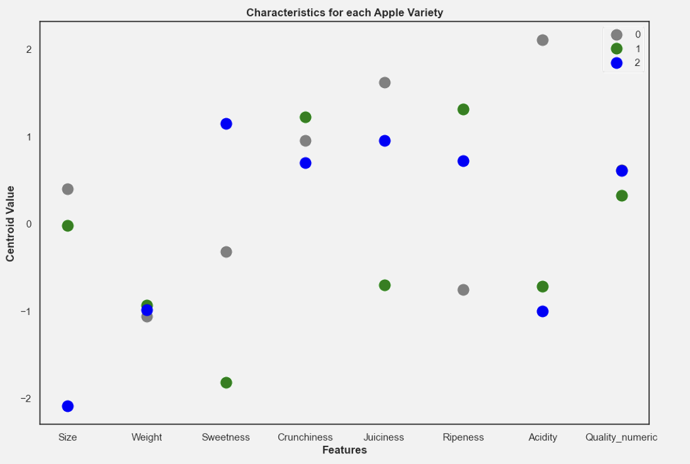
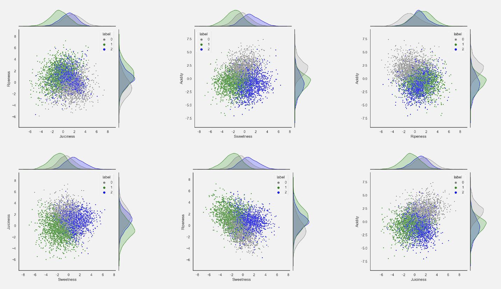

Apple Quality Analysis
Predicting quality and differentiating varieties with modern data analytics
Aim of the Project
The project aimed to analyse a Kaggle dataset regarding apple quality, predicting the quality of apples using various attributes, and identifying distinct apple varieties based on the dataset. Through multiple stages of data analysis, the project explored the correlations, regressions, and clustering of apple characteristics to make predictions regarding apple quality and cluster the apples into three distinct varieties.
Dataset
The dataset, termed "Apple Quality," contains data on apples characterised by 7 numeric columns (size, weight, sweetness, crunchiness, juiciness, ripeness, and acidity) and 1 non-numeric column (quality classified as "good" or "bad"). Originally consisting of 4001 rows and 9 columns, adjustments were made by removing redundant or non-essential data. The dataset lacks raw data and has undergone an unknown transformation, which affects the scale of numeric values used.
Data Familiarisation and Preparation
After checking for missing values and discarding the ID column and one row holding the author's name, we familiarised ourselves with the dataset. We examined it to understand its distribution and prepare it for further analysis, including checks for normality. The following description table was obtained.
To check for normal distribution histograms were constructed for all the variables. Additionally skew and kurtosis were obtained. The result shows that all features are approximately normally distributed.
Correlation and Regression Analyses
Various correlations between the numeric features were explored to understand their relationships. For this a correlation matrix was build, as well as box whiskers plots showing the features distribution per quality. Regression analyses were conducted to predict apple quality and other attributes, using logistic regression for quality prediction and linear regression for other features. The logistic regression with the best result used all features as independent variables and the quality as dependent. The obtained accuracy was 72.8%.
 Clustering
K-means clustering was utilized to differentiate apple varieties based on their characteristics. First the optimal number of clusters was determined through the elbow method. The below graphic shows the inertia per number of clusters. Here a linechart is usually chosen as the best visualisation tool as it allows one to see the “elbow” determining the optimal number of clusters. According to the chart below, three clusters were used, denoting three distinct apple varieties as will be shown later on.
Then the cluster centroids per feature were plotted to show the different profiles of the identified three apple varieties. Here a scatter plot was chosen, over a line chart, because it does not make sense to connect a point in the feature “Acidity” with a point representing the feature “Juiciness”. Using color coding for the different clusters enables one to easily read the flavour profiles of the different apple varietes. This plot clearly shows that the clusters have different features, showing different apple varieties.
To get an even better understanding of the relationship between the clusters the following joint plots were crafted. These plots show every apple positioned on a grid comprised of two features, with their color denoting the apple variety. This shows the viewer, how the different apple varieties overlap in a certain feature. The distribution plots at the side are a very important addition as they show how the distribution for each apple variety is regarding the feature. This enables the viewer to get a more aggregate view of how the feature is distributed differently for each variety.
After seeing these differences, t-tests were conducted. For every feature the apple variety with the centroid highest in this feature and the one with the centroid lowest ranked in this feature are were tested against one another. This proved statistically significant for all features, underlining that the apple varieties are not different merely by chance but systematically.
Conclusion
The project successfully identified three distinct apple varieties, each with unique characteristics that could be systematically differentiated using statistical tests. The logistic regression model predicted apple quality with a 72.8% accuracy, illustrating significant predictive capability based on size, sweetness, and other factors. The correlations and regression analyses revealed interesting relationships between the apple attributes, contributing to a deeper understanding of factors influencing apple quality.